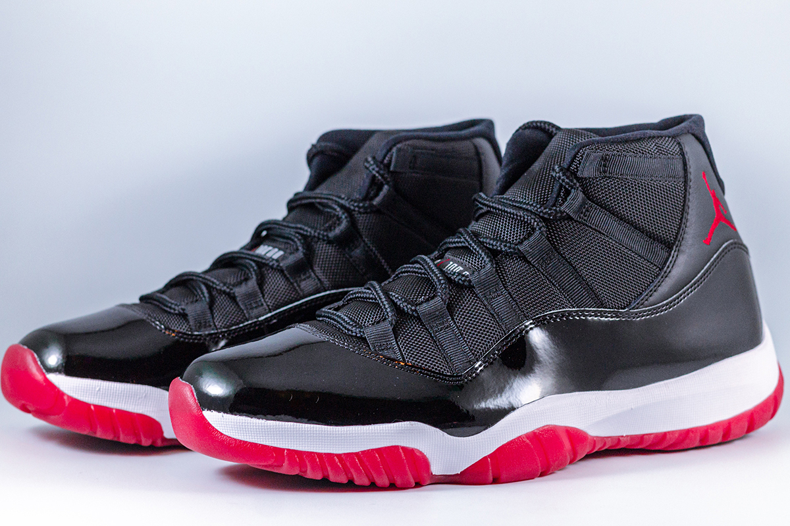

메인 페이지
|
에어조던 11
|
쉐다곤 파고다
|
만타 가오리

에어 조던 11은 올타임 클래식입니다.
마이클 조던은 이 신발을 신고 72승을 거두며 타이틀을 차지했죠.
이제 그 아이콘이 돌아옵니다.
매끄러운 에나멜가죽 머드가드와 성에가 서린 듯 불투명한 밑창이 적용된 팅커 햇필드의 디자인으로 코트 밖에서도 매력적인 스타일을 연출합니다.
마지막으로, 밑창 전체에 나이키 에어 쿠셔닝을 적용해 완벽하게 마무리했죠.